使用 AI Lab 微调 ChatGLM3 模型¶
本文以 ChatGLM3 模型为例，演示如何在 AI Lab 中使用 LoRA（Low-Rank Adaptation，低秩自适应）微调 ChatGLM3 模型。
Demo 程序来自 ChatGLM3 官方案例。
微调的大致流程为：
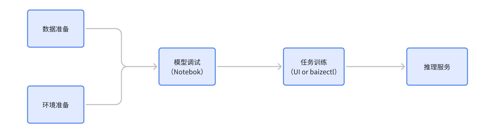
环境依赖¶
- GPU 显存至少 20GB，推荐使用 RTX4090、NVIDIA A/H 系列显卡
- 可用磁盘空间至少 200GB
- CPU 至少 8 核，推荐 16 核
- 内存 64GB，推荐 128GB
Info
在开始体验之前，请检查 AI 算力平台以及 AI Lab 部署正确，GPU 队列资源初始化成功，且算力资源充足。
数据准备¶
利用 AI Lab 提供的数据集管理功能，快速将微调大模型所需的数据进行预热及持久化，减少因为准备数据导致的 GPU 资源占用，提高资源利用效率。
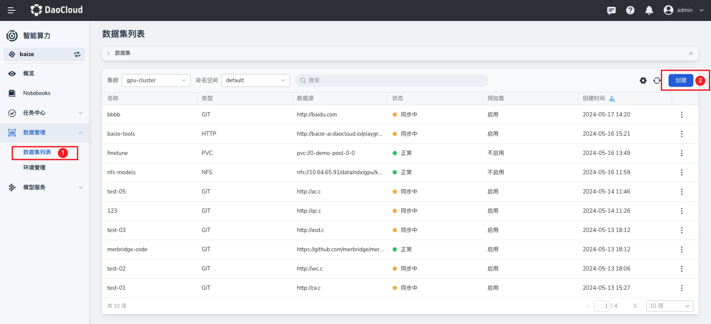
在数据集列表页面，创建需要的数据资源，这些资源包含了 ChatGLM3 代码，也可以是数据文件，所有这些数据都可以通过数据集列表来统一管理。
代码及模型文件¶
ChatGLM3 是智谱 AI 和清华大学 KEG 实验室联合发布的对话预训练模型。
先拉取 ChatGLM3 代码仓库，下载预训练模型，用于后续的微调任务。
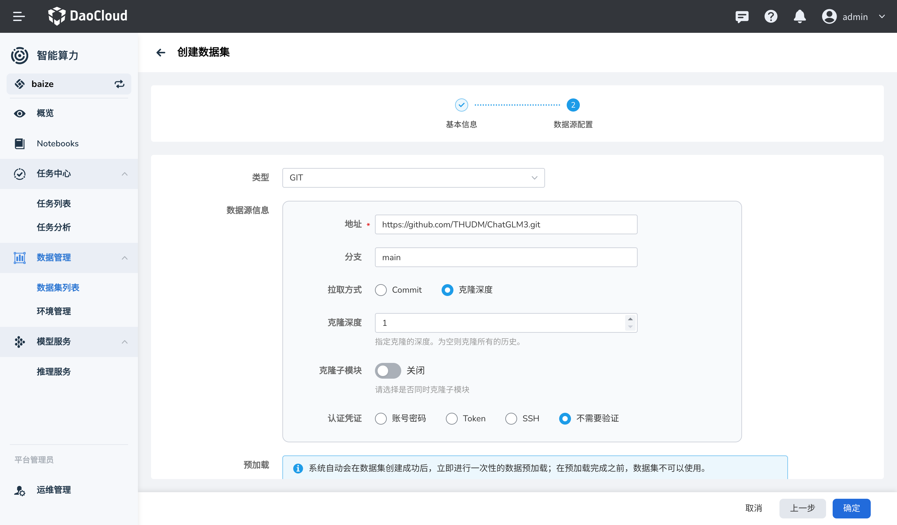
AI Lab 会在后台进行全自动数据预热，以便后续的任务能够快速访问数据。
AdvertiseGen 数据集¶
国内数据可以从 Tsinghua Cloud 直接获取，这里使用 HTTP 的数据源方式。
注意创建完成后，需要等待数据集预热完成，一般很快，根据您的网络情况而定。
微调输出数据¶
同时，您需要准备一个空的数据集，用于存放微调任务完成后输出的模型文件，这里创建一个空的数据集，以 PVC 为例。
Warning
注意需要使用支持 ReadWriteMany 的存储类型，以便后续的任务能够快速访问数据。
环境准备¶
对于模型开发者来说，准备模型开发需要的 Python 环境依赖是非常重要的，传统做法将环境依赖直接打包到开发工具的镜像中， 或者直接在本地环境中安装，但是这样做会导致环境依赖的不一致，而且不利于环境的管理和依赖更新及同步。
AI Lab 提供了环境管理的能力，将 Python 环境依赖包管理和开发工具、任务镜像等进行解耦，解决了依赖管理混乱，环境不一致等问题。
这里使用 AI Lab 提供的环境管理功能，创建 ChatGLM3 微调所需的环境，以备后续使用。
Warning
- ChatGLM 仓库内有
requirements.txt文件，里面包含了 ChatGLM3 微调所需的环境依赖 - 本次微调没有用到
deepspeed和mpi4py包，建议从requirements.txt文件中将其注释掉，否则可能出现包编译不通过的情况
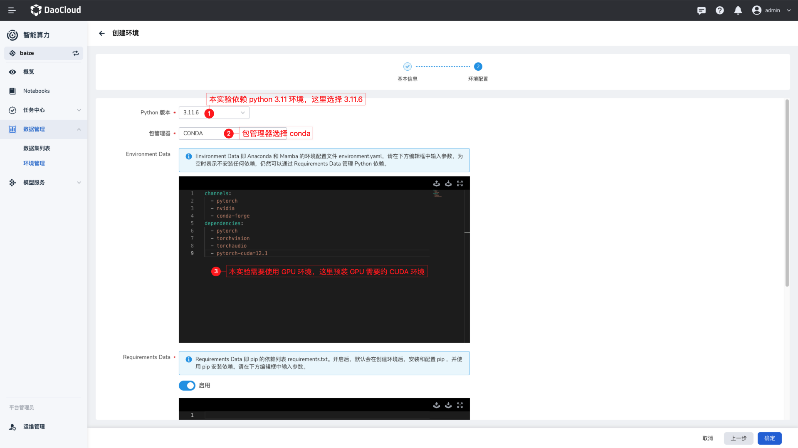
在环境管理列表，您可以快速创建一个 Python 环境，并通过简单的表单配置来完成环境的创建；这里需要一个 Python 3.11.x 环境，
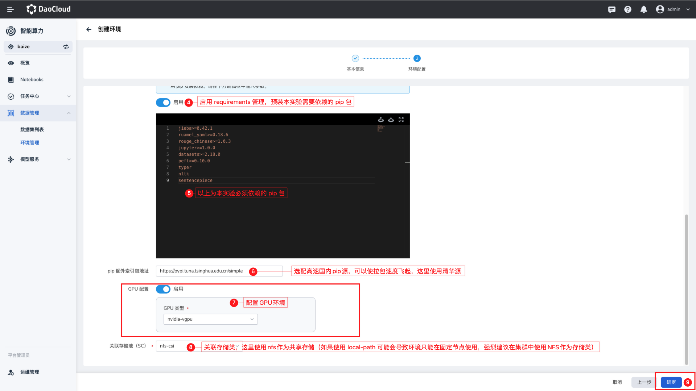
因为本实验需要使用 CUDA，所以在这里需要配置 GPU 资源，用于预热需要资源的依赖库。
创建环境，需要去下载一系列的 Python 依赖，根据您的实际位置不同，可能会有不同的下载速度，这里使用了国内的镜像加速，可以加快下载速度。
使用 Notebook 作为 IDE¶
AI Lab 提供了 Notebook 作为 IDE 的功能，可以让用户在浏览器中直接编写代码，运行代码，查看代码运行结果，非常适合于数据分析、机器学习、深度学习等领域的开发。
您可以使用 AI Lab 提供的 JupyterLab Notebook 来进行 ChatGLM3 的微调任务。
创建 JupyterLab Notebook¶
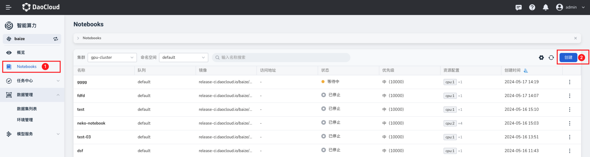
在 Notebook 列表中，可以根据页面操作指引，创建一个 Notebook。注意您需要根据前文提到的资源要求来配置对应的 Notebook 资源参数， 避免后续因为资源问题，影响微调过程。
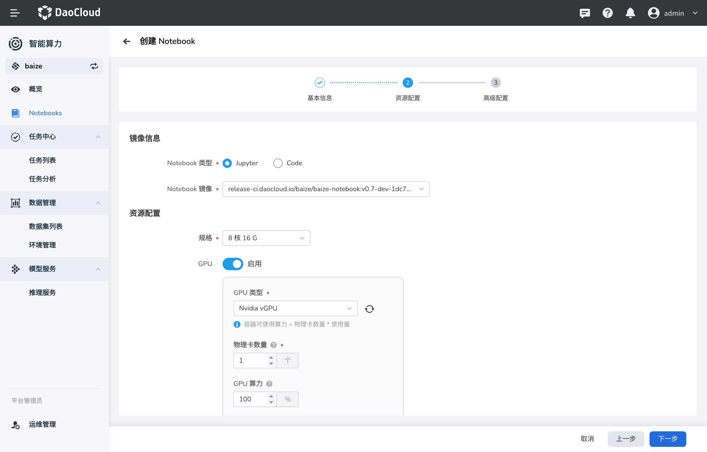
Note
在创建 Notebook 时，可以将之前预加载的模型代码数据集和环境，直接挂载到 Notebook 中，极大节省了数据准备的时间。
挂载数据集和代码¶
注意：ChatGLM3 的代码文件挂载到了 /home/jovyan/ChatGLM3 目录下，同时您也需要将 AdvertiseGen 数据集挂载到
/home/jovyan/ChatGLM3/finetune_demo/data/AdvertiseGen 目录下，以便后续的微调任务能够访问数据。
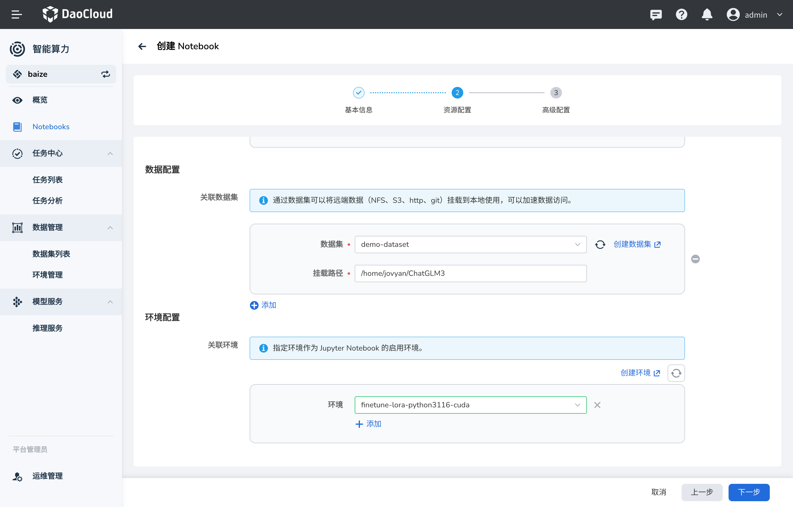
挂载 PVC 到模型输出文件夹¶
本次使用的模型输出位置在 /home/jovyan/ChatGLM3/finetune_demo/output 目录下，可以将之前创建的 PVC 数据集挂载到这个目录下，
这样训练输出的模型就可以保存到数据集中，后续模型推理等任务可以直接访问。
创建完成后，可以看到 Notebook 的界面，您可以直接在 Notebook 中编写代码，运行代码，查看代码运行结果。
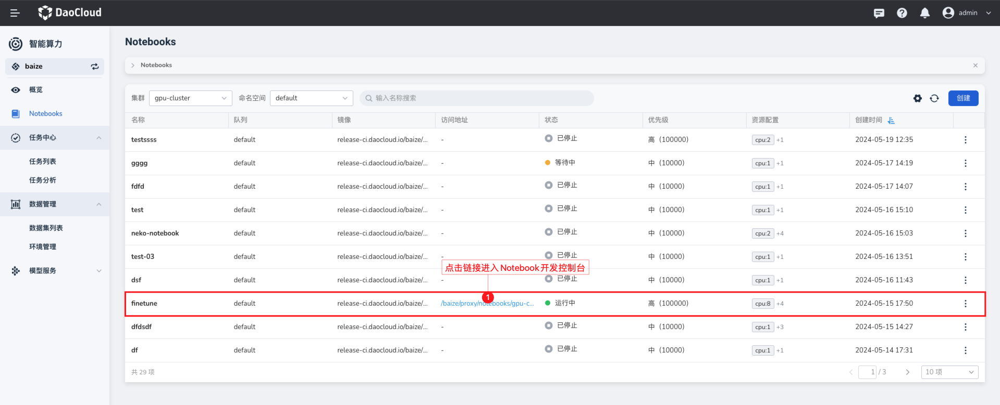
微调 ChatGLM3¶
当您进入到 Notebook 中后，可以在 Notebook 侧边栏会发现有一个 File Browser 的选项，可以看到之前挂载的数据集和代码，在这里找到 ChatGLM3 的文件夹。
您可以看到 ChatGLM3 的微调代码在 finetune_demo 文件夹中，这里可以直接打开 lora_finetune.ipynb 文件，这是 ChatGLM3 的微调代码。
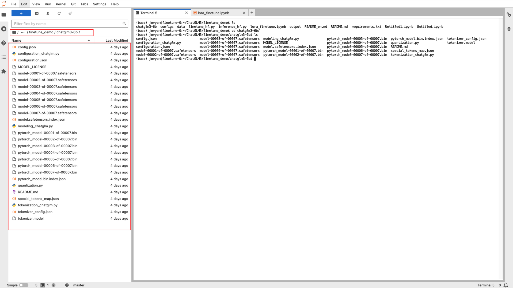
首先，根据 README.md 的说明，您可以了解到整个微调的过程，建议先阅读一遍，确保基础的环境依赖和数据准备工作都已经完成。
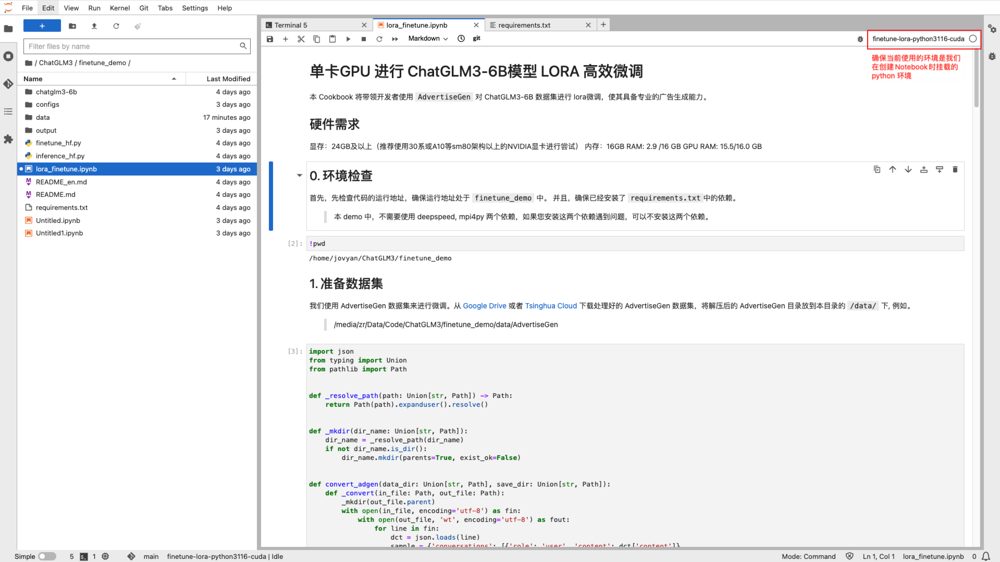
打开终端，并使用 conda 切换到您提前预热的环境中，此环境与 JupyterLab Kernel 保持一致，以便后续的代码运行。
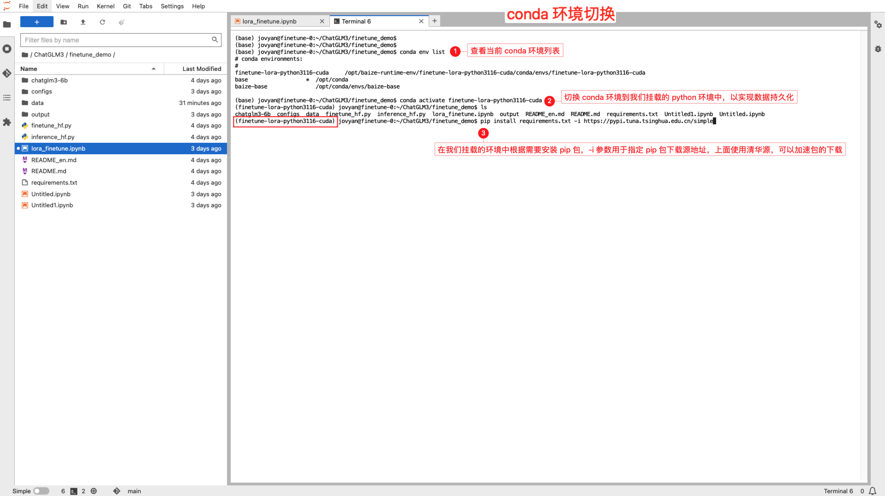
数据预处理¶
首先，您需要将 AdvertiseGen 数据集进行预处理，对数据进行标准化处理，使其符合 Lora 预训练的标准格式要求；
这里将处理后的数据保存到 AdvertiseGen_fix 文件夹中。
import json
from typing import Union
from pathlib import Path
def _resolve_path(path: Union[str, Path]) -> Path:
return Path(path).expanduser().resolve()
def _mkdir(dir_name: Union[str, Path]):
dir_name = _resolve_path(dir_name)
if not dir_name.is_dir():
dir_name.mkdir(parents=True, exist_ok=False)
def convert_adgen(data_dir: Union[str, Path], save_dir: Union[str, Path]):
def _convert(in_file: Path, out_file: Path):
_mkdir(out_file.parent)
with open(in_file, encoding='utf-8') as fin:
with open(out_file, 'wt', encoding='utf-8') as fout:
for line in fin:
dct = json.loads(line)
sample = {'conversations': [{'role': 'user', 'content': dct['content']},
{'role': 'assistant', 'content': dct['summary']}]}
fout.write(json.dumps(sample, ensure_ascii=False) + '\n')
data_dir = _resolve_path(data_dir)
save_dir = _resolve_path(save_dir)
train_file = data_dir / 'train.json'
if train_file.is_file():
out_file = save_dir / train_file.relative_to(data_dir)
_convert(train_file, out_file)
dev_file = data_dir / 'dev.json'
if dev_file.is_file():
out_file = save_dir / dev_file.relative_to(data_dir)
_convert(dev_file, out_file)
convert_adgen('data/AdvertiseGen', 'data/AdvertiseGen_fix')
为了节省调试的时间，您可以将 /home/jovyan/ChatGLM3/finetune_demo/data/AdvertiseGen_fix/dev.json
中的数据量缩减到 50 条，这里的数据是 JSON 格式，处理起来也是比较方便的。
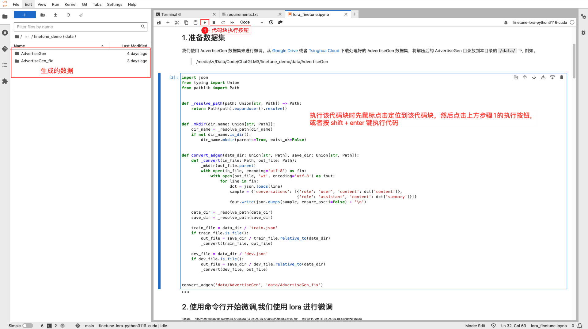
本地 LoRA 微调测试¶
完成数据的预处理之后，基本上您就可以直接微调测试了，可以在
/home/jovyan/ChatGLM3/finetune_demo/configs/lora.yaml 文件中配置微调的参数，一般需要关注的参数基本如下：
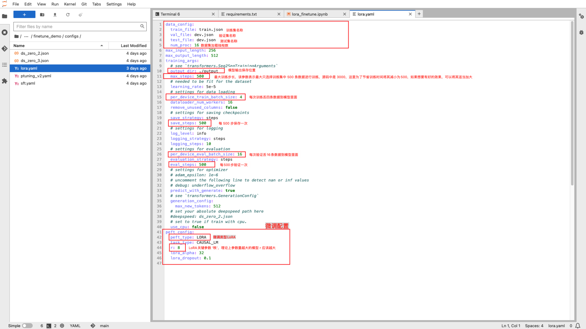
新开一个终端窗口，使用如下命令即可进行本地微调测试，请确保参数配置和路径正确：
!CUDA_VISIBLE_DEVICES=0 NCCL_P2P_DISABLE="1" NCCL_IB_DISABLE="1" python finetune_hf.py data/AdvertiseGen_fix ./chatglm3-6b configs/lora.yaml
在这条命令中，
finetune_hf.py是 ChatGLM3 代码中的微调脚本data/AdvertiseGen_fix是您预处理后的数据集./chatglm3-6b是您预训练模型的路径configs/lora.yaml是微调的配置文件
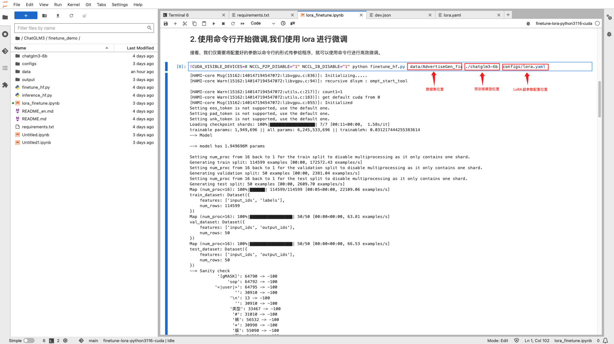
微调过程中可以使用 nvidia-smi 命令查看 GPU 显存使用情况：
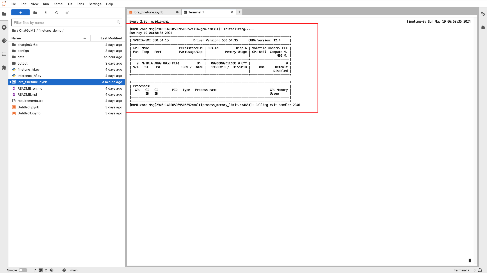
在微调完成后，在 finetune_demo 目录下会生成一个 output 目录，里面包含了微调的模型文件，
这样微调的模型文件就直接保存到您之前创建的 PVC 数据集中了。
微调任务提交¶
在本地微调测试完成后，确保您的代码和数据没有问题，接下来可以将微调任务提交到AI Lab 中，进行大规模的训练和微调任务。
这也是推荐的模型开发和微调流程，先在本地进行微调测试，确保代码和数据没有问题。
使用界面提交微调任务¶
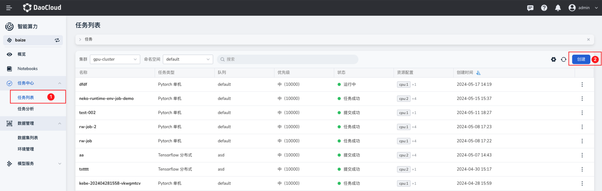
这里使用 Pytorch 来创建微调任务，根据您的实际情况，选择需要使用哪个集群的资源，注意需要满足前面资源准备中提及的资源要求。

- 镜像：可直接使用 baizectl 提供的模型镜像
-
启动命令，根据您在 Notebook 中使用 LoRA 微调的经验，代码文件和数据在
/home/jovyan/ChatGLM3/finetune_demo目录下，所以您可以直接使用这个路径： -
挂载环境，这样之前预加载的环境依赖不仅可以在 Notebook 中使用，同时也可以在任务中使用
- 数据集：直接使用之前预热的数据集
- 将模型输出路径设置为之前创建的 PVC 数据集
- 将
AdvertiseGen数据集挂载到/home/jovyan/ChatGLM3/finetune_demo/data/AdvertiseGen目录下
- 配置足够的 GPU 资源，确保微调任务能够正常运行
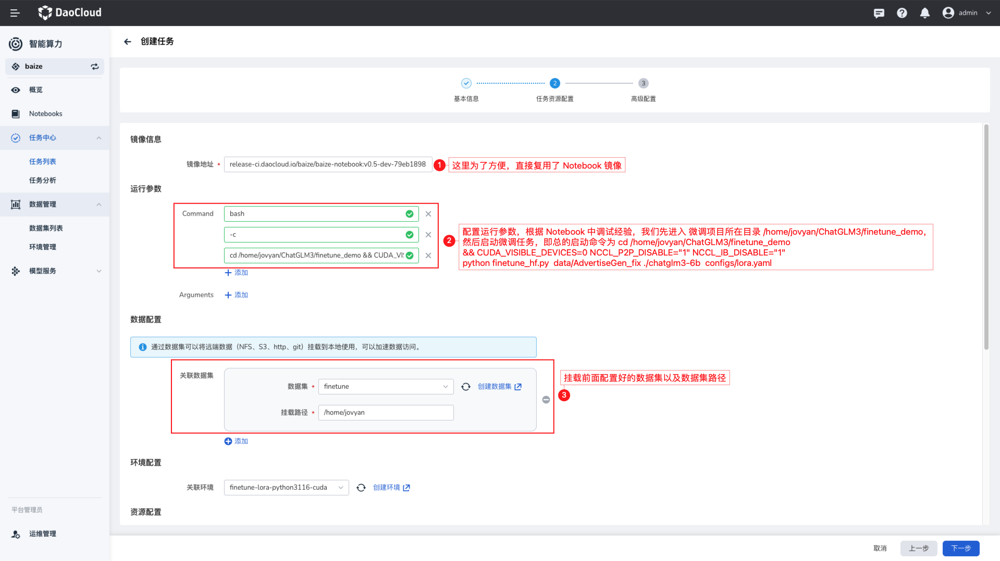
查看任务状态¶
任务成功提交后，您可以在任务列表中实时查看任务的训练进展，这里您可以看到任务的状态、资源使用情况、日志等信息。
查看任务日志
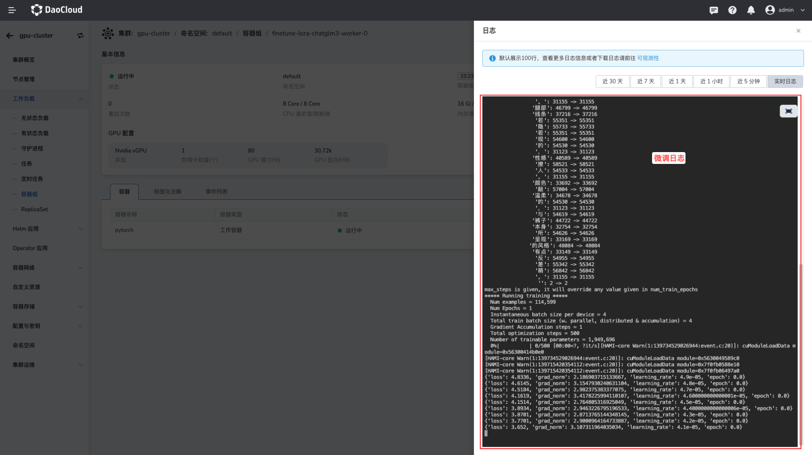
任务运行完成后，您可以在数据输出的数据集中查看微调的模型文件，这样就可以使用这个模型文件进行后续的推理任务。
使用 baizectl 提交任务¶
AI Lab 的 Notebook 支持免认证直接使用 baizectl 命令行工具，
如果您喜欢使用 CLI，那么可以直接使用 baizectl 提供的命令行工具，提交任务。
baizectl job submit --name finetunel-chatglm3 -t PYTORCH \
--image release.daocloud.io/baize/baize-notebook:v0.5.0 \
--priority baize-high-priority \
--resources cpu=8,memory=16Gi,nvidia.com/gpu=1 \
--workers 1 \
--queue default \
--working-dir /home/jovyan/ChatGLM3 \
--datasets AdvertiseGen:/home/jovyan/ChatGLM3/finetune_demo/data/AdvertiseGen \
--datasets output:/home/jovyan/ChatGLM3/finetune_demo/output \
--labels job_type=pytorch \
--restart-policy on-failure \
-- bash -c "cd /home/jovyan/ChatGLM3/finetune_demo && CUDA_VISIBLE_DEVICES=0 NCCL_P2P_DISABLE="1" NCCL_IB_DISABLE="1" python finetune_hf.py data/AdvertiseGen_fix ./chatglm3-6b configs/lora.yaml"
如果希望了解更多 baizectl 的使用说明，可以查看 baizectl 使用文档。
模型推理¶
在微调任务完成后，您可以使用微调的模型进行推理任务，这里您可以使用AI Lab 提供的推理服务，将输出后的模型创建为推理服务。
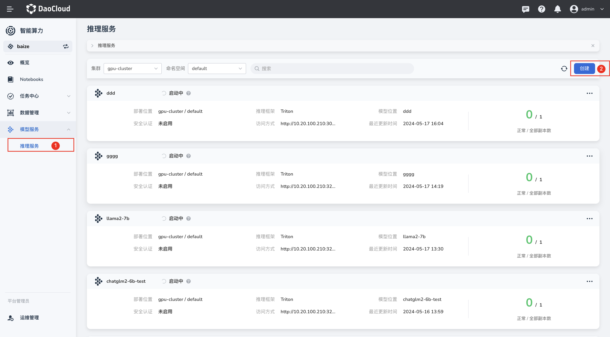
在推理服务列表中，您可以创建一个新的推理服务，在选择模型的位置，选择之前推理输出的数据集，并配置模型路径。
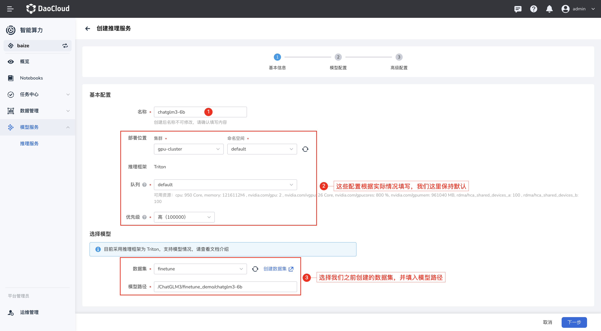
有关模型资源要求、推理服务的 GPU 资源要求，需要根据模型的大小和推理的并发量来配置，这里您可以根据之前微调任务的资源配置来配置。
配置模型运行时¶
配置模型的运行时尤为重要，目前 AI Lab 已经支持 vLLM 作为模型推理服务的运行时，可以直接选择 vLLM。
vLLM 支持非常丰富的大语言模型，建议访问 vLLM 了解更多信息，这些模型都可以很方便地在 AI Lab 中使用。
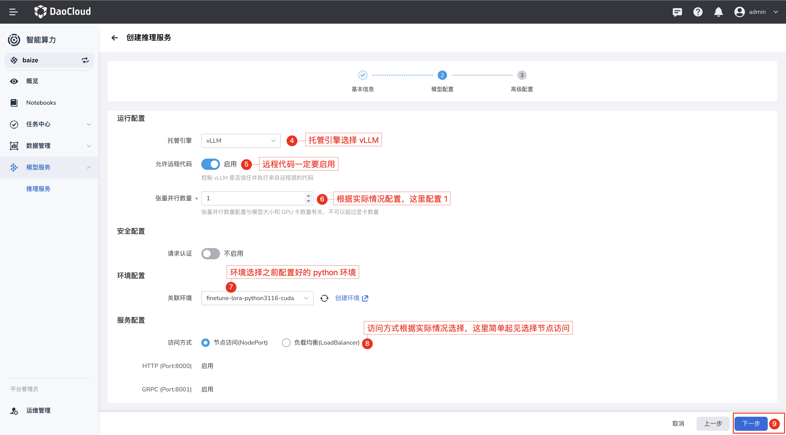
创建完成后，您可以在推理服务列表中看到您创建的推理服务，在模型服务列表，您可以直接获取模型的访问地址
使用模型服务测试¶
简单在终端中尝试，使用 curl 命令来测试模型服务，这里您可以看到返回的结果，这样就可以使用模型服务进行推理任务了。
curl -X POST http://10.20.100.210:31118/v2/models/chatglm3-6b/generate \
-d '{"text_input": "hello", "stream": false, "sampling_parameters": "{\"temperature\": 0.7, \"top_p\": 0.95, \'max_tokens\": 1024｝"｝'
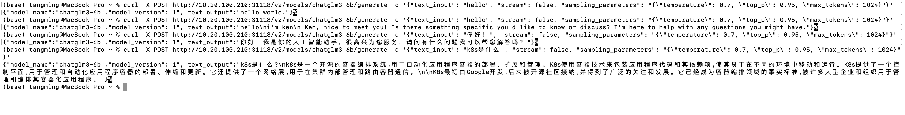
结语¶
本文以 ChatGLM3 为例，带您快速了解和上手 AI Lab 的模型微调，使用 LoRA 微调了 ChatGLM3 模型。
AI Lab 提供了非常丰富的功能，可以帮助模型开发者快速进行模型开发、微调、推理等任务，同时也提供了丰富的 OpenAPI 接口，可以方便地与第三方应用生态进行结合。